5단계 역전파 이론
역전파 이론
우리는 수치 미분을 이용해 미분을 계산할 수 있게 되었지만 수치 미분은 계산 비용과 정확도 면에서 문제가 있습니다.
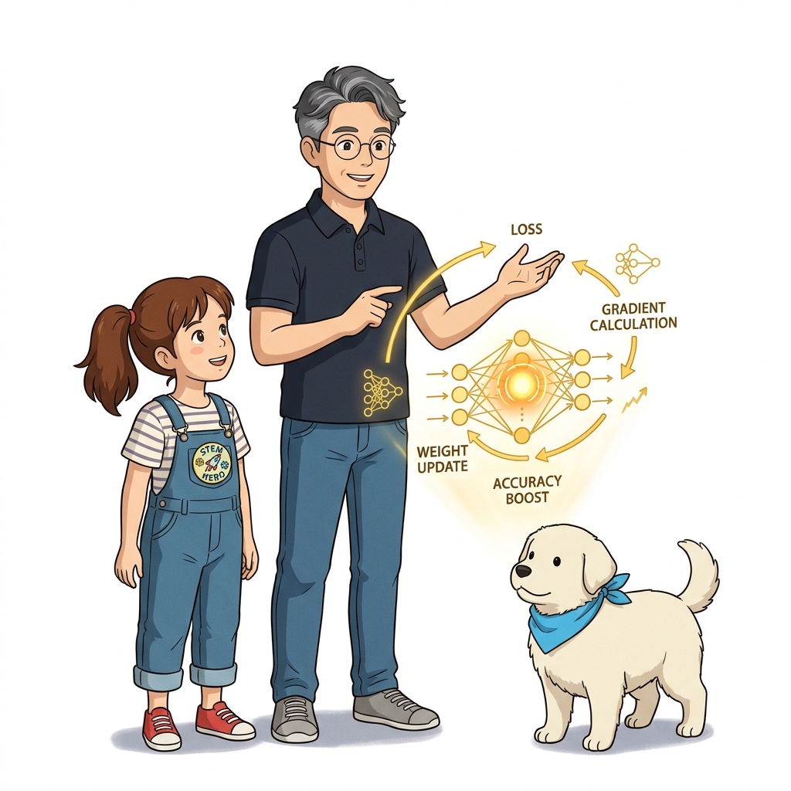
그림 5-1: 단 한 번의 전파로 모든 변수의 기울기를 계산하는 역전파(Backpropagation)의 개막지금이 바로 역전파backpropagation, 오차역전파법가 구세주로 등장할 시점입니다!
역전파를 이용하면 미분을 효율적으로 계산할 수 있고 결과값의 오차도 더 작습니다.
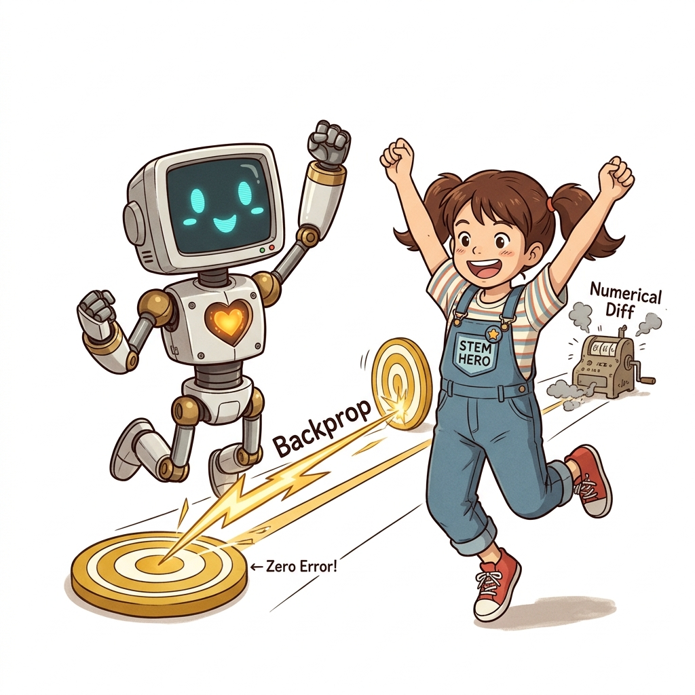
그림 5-2: 근사 오차 없이 정확하고 번개처럼 빠른 역전파의 성능적 우위이번 단계에서는 아직 역전파 구현까지는 들어가지 않고 이론 설명에 집중하겠습니다(구현은 다음 단계로 양보했습니다).
5.1 연쇄 법칙
역전파를 이해하는 열쇠는 연쇄 법칙chain rule입니다. chain은 ‘사슬’이라는 뜻으로, 여러 함수를 사슬처럼 연결하여 사용하는 모습을 빗댄 것입니다. 연쇄 법칙에 따르면 합성 함수(여러 함수가 연결된 함수)의 미분은 구성 함수 각각을 미분한 후 곱한 것과 같습니다.
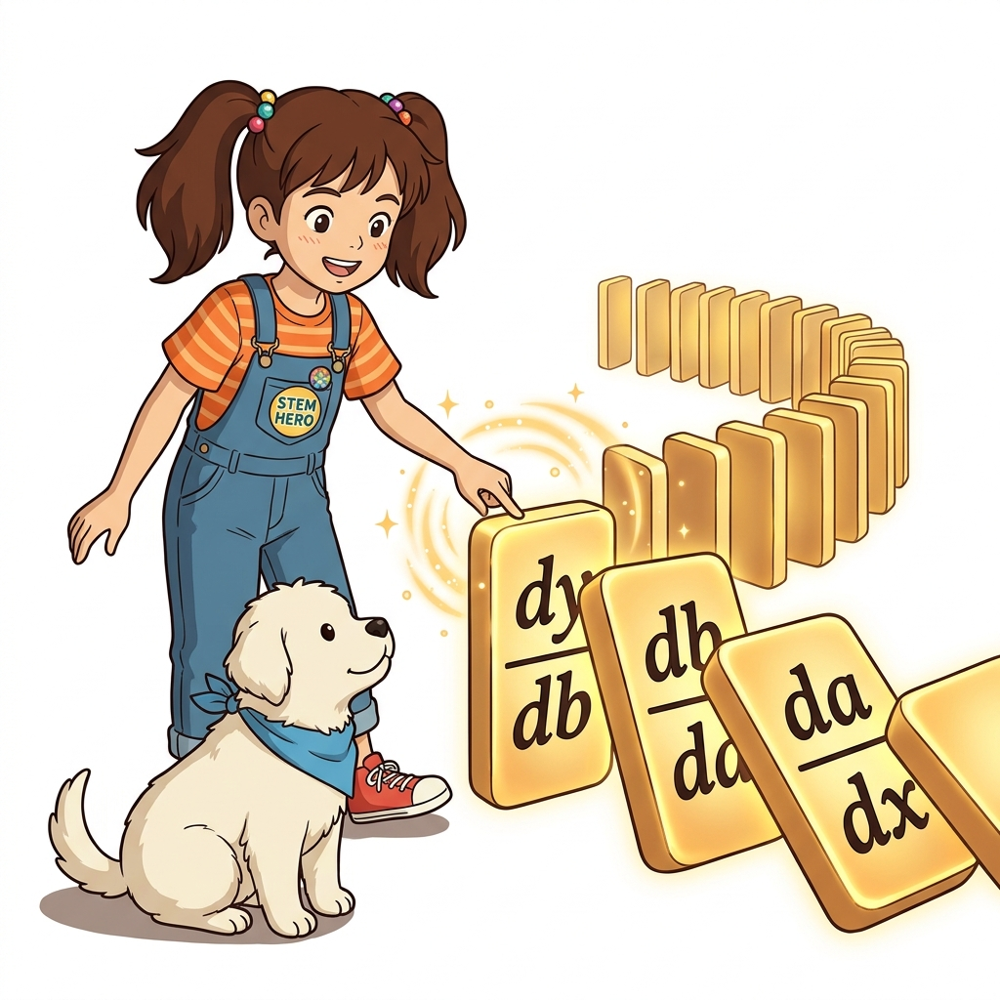
그림 5-3: 도미노처럼 국소적 미분들이 차례로 곱해져 전달되는 합성 함수의 연쇄 법칙구체적인 예를 하나 들어보죠. $y = F(x)$ 라는 함수가 있다고 합시다.
이 함수는 $a = A(x)$, $b = B(a)$, $y = C(b)$ 라는 세 함수로 구성되어 있습니다. 계산 그래프로 그리면 [그림 5-1]처럼 됩니다.
그림 5-1 합성 함수의 예
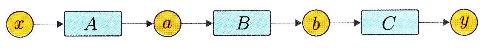
이때 $x$ 에 대한 $y$ 의 미분은 [식 5.1]로 표현할 수 있습니다. \(\frac{dy}{dx} = \frac{dy}{db} \frac{db}{da} \frac{da}{dx}\)
[식 5.1]
[식 5.1]에서 알 수 있듯이 $x$ 에 대한 $y$ 의 미분은 구성 함수 각각의 미분값을 모두 곱한 값과 같습니다.
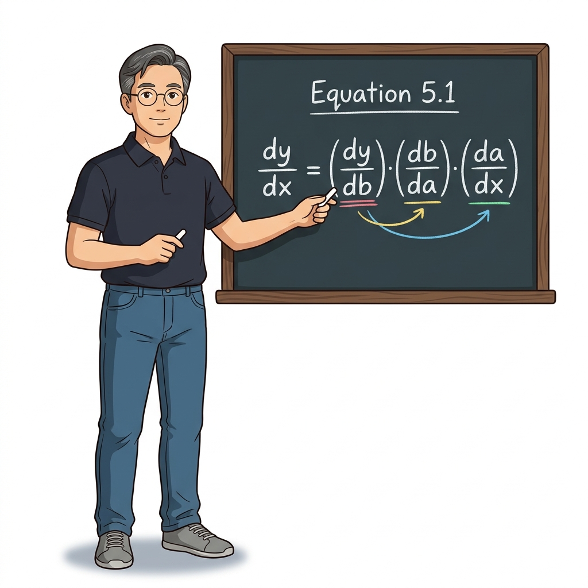
그림 5-4: 식 (5.1) 합성 함수 전체의 미분은 각 국소 미분들의 곱으로 표현된다즉, 합성 함수의 미분은 각 함수의 국소적인 미분들로 분해할 수 있습니다.
이것이 연쇄 법칙입니다. 또한 [식 5.1] 앞에 다음과 같이 $\frac{dy}{dy}$ 를 명시할 수도 있습니다. \(\frac{dy}{dx} = \frac{dy}{dy} \frac{dy}{db} \frac{db}{da} \frac{da}{dx}\)
[식 5.2]
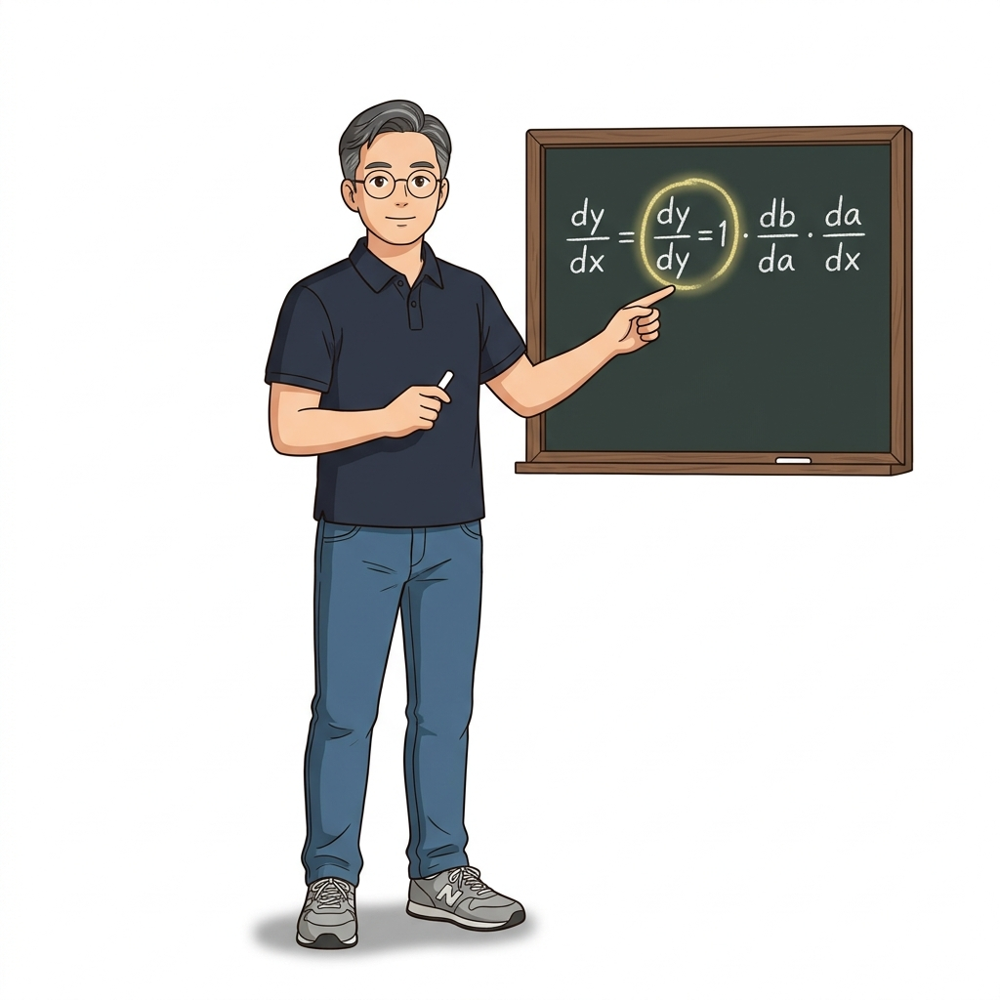
그림 5-5: 역전파 계산의 시작을 알리는 dy/dy 항의 의의\[\frac{dy}{dy} = 1\]
$\frac{dy}{dy}$ 는 ‘자신’에 대한 미분이라서 항상 1입니다.
따라서 생략하는 것이 보통이지만 이 강의에서는 역전파를 구현할 때를 대비하여 포함하도록 하겠습니다.
그림 5-6: 최종 출력 y에서 입력 방향으로 출발하는 초기 기울기 신호 1.0
NOTE
$\frac{dy}{dy}$ 는 $y$ 의 $y$ 에 대한 미분입니다. 이때 $y$ 가 작은 값만큼 변하면 자기 자신인 $y$ 도 당연히 같은 크기만큼 변합니다. 따라서 변화율은 어떤 함수의 경우에도 항상 1입니다.
그림 5-7: 1:1 거울처럼 자기 자신의 변화량에 대한 변화율은 항상 1이다
5.2 역전파 원리 도출
이제 [식 5.2]를 차분히 살펴볼 시간입니다. [식 5.2]는 합성 함수의 미분은 구성 함수들의 미분의 곱으로 분해할 수 있음을 뜻합니다.
‘곱하는 순서’까지 말해주지는 않지만 사실 어떤 순서로 곱해도 상관없습니다.
그림 5-8: 곱하는 순서를 바꾸어도 결과가 같은 스칼라 곱셈의 교환 법칙
그러니 [식 5.3]과 같이 출력에서 입력 방향으로(즉, 역방향으로) 순서대로 계산해보겠습니다.* \(\frac{dy}{dx} = \left( \left( \frac{dy}{dy} \frac{dy}{db} \right) \frac{db}{da} \right) \frac{da}{dx}\)
[식 5.3]
[식 5.3]과 같이 출력에서 입력 방향으로, 즉 보통의 계산과는 반대 방향으로 미분을 계산합니다.
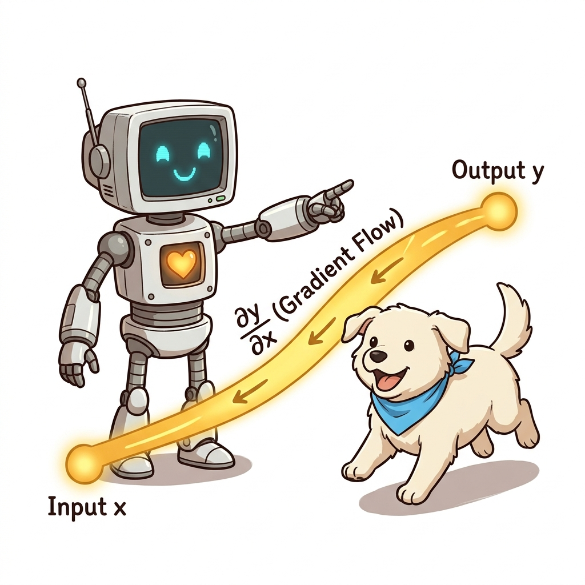
그림 5-9: 출력 y로부터 중간 변수들을 거쳐 입력 x로 향하는 역방향 계산 흐름이때 [식 5.3]의 계산 흐름은 [그림 5-2]와 같습니다.
- 입력에서 출력 방향으로 계산하는 방법도 생각할 수 있습니다. 이를 ‘포워드 모드 자동 미분’이라고 하며, 제1고지 마지막의 ‘칼럼: 자동 미분’에서 설명하겠습니다.
그림 5-2 출력 쪽의 미분부터 순서대로 계산
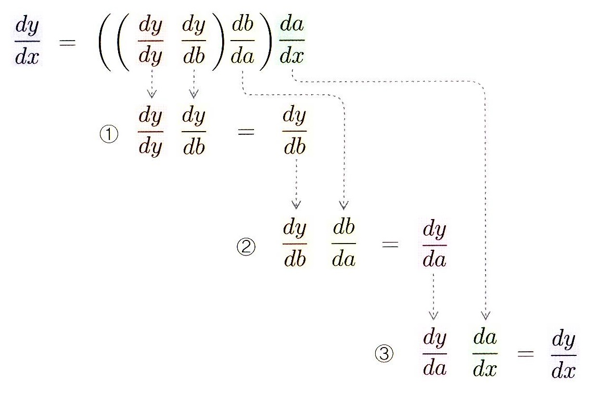
[그림 5-2]처럼 출력 $y$ 에서 입력 $x$ 방향으로 곱하면서 순서대로 미분하면 최종적으로 $\frac{dy}{dx}$ 가 구해집니다. 계산 그래프로는 [그림 5-3]처럼 됩니다.
그림 5-3 $\frac{dy}{dx}$ 를 구하는 계산 그래프
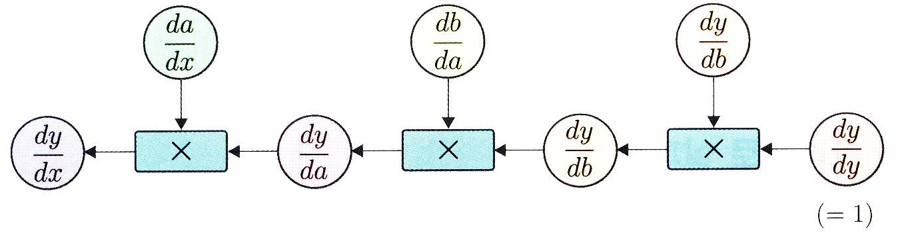
[그림 5-3]의 계산 그래프를 잘 관찰해봅시다. 우선 $\frac{dy}{dy} (= 1)$ 에서 시작하여 $\frac{dy}{db}$ 와 곱합니다.
여기서 $\frac{dy}{db}$ 는 함수 $y = C(b)$ 의 미분입니다. 따라서 함수 $C$ 의 도함수를 $C’$ 로 나타내면 $\frac{dy}{db} = C’(b)$ 라고 쓸 수 있습니다. 마찬가지로 $\frac{db}{da} = B’(a)$ 이고 $\frac{da}{dx} = A’(x)$ 입니다. 이에 따라 [그림 5-3]의 계산 그래프는 다음과 같이 단순화할 수 있습니다.
그림 5-4 단순화한 역전파 계산 그래프($A’(x)$ 의 곱셈을 ‘$A’(x)$’라는 노드로 간략하게 표현)
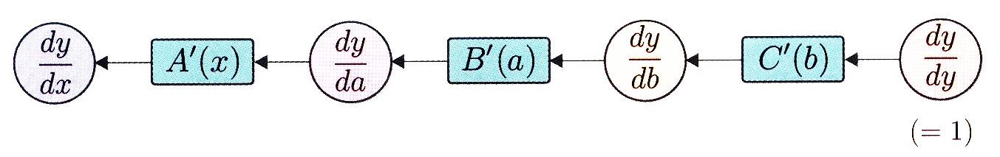
[그림 5-4]와 같이 도함수의 곱을 함수 노드 하나로 그릴 수 있습니다. 이제 미분값이 전파되는 흐름이 명확해집니다.
[그림 5-4]를 보면 ‘$y$ 의 각 변수에 대한 미분값’, 즉 변수 $y$, $b$, $a$, $x$ 에 대한 미분값이 오른쪽에서 왼쪽으로 전파되는 것을 알 수 있습니다.
이것이 역전파입니다.
그림 5-10: 미분값을 출력에서 입력 방향으로 전파하는 역전파(Backpropagation)의 본질
여기서 중요한 점은 전파되는 데이터는 모두 ‘$y$ 의 미분값’이라는 것입니다.
구체적으로는 $\frac{dy}{dy}$, $\frac{dy}{db}$, $\frac{dy}{da}$, $\frac{dy}{dx}$ 처럼 모두 ‘$y$ 의 OO에 대한 미분값’이 전파되고 있습니다.
그림 5-11: dy/db, dy/da, dy/dx 로 이어지는 미분값의 연쇄 전달 과정
NOTE
[식 5.3]과 같이 계산 순서를 출력에서 입력 방향으로 정한 이유는 $y$ 의 미분값을 전파하기 위해서입니다. 즉, $y$ 를 ‘중요 요소’로 대우하기 때문입니다. 만약 입력에서 출력 방향으로 계산했다면 중요 요소는 입력인 $x$ 가 됩니다. 이 경우 전파되는 값은 $\frac{dx}{dx} \to \frac{da}{dx} \to \frac{db}{dx} \to \frac{dy}{dx}$ 가 되어 $x$ 에 대한 미분을 전파하게 됩니다.
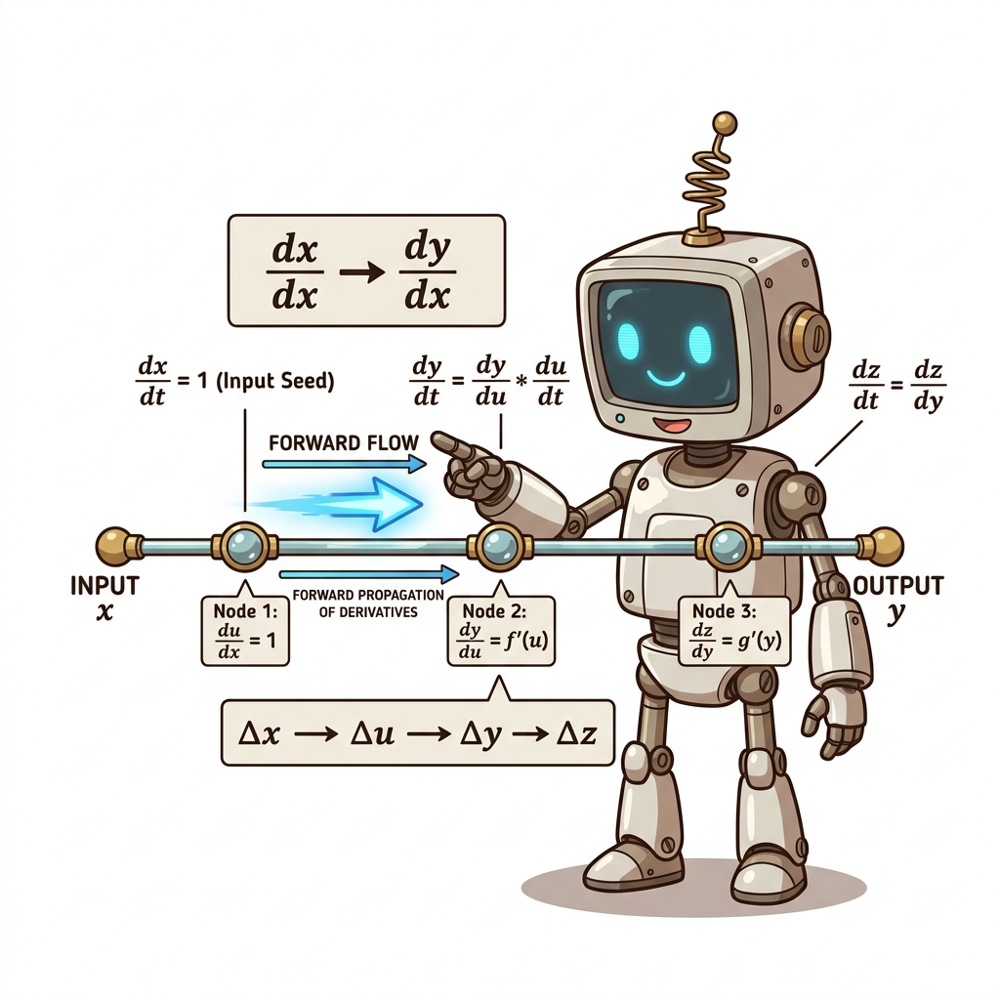
그림 5-12: 입력부터 출발하는 순방향 미분과 출력부터 거슬러오는 역방향 미분의 구조 비교머신러닝은 주로 대량의 매개변수를 입력받아서 마지막에 손실 함수loss function를 거쳐 출력을 내는 형태로 진행됩니다.
손실 함수의 출력은 (많은 경우) 단일한 스칼라값이며, 이 값이 ‘중요 요소’입니다. 즉, 손실 함수의 각 매개변수에 대한 미분을 계산해야 합니다. 이런 경우 미분값을 출력에서 입력 방향으로 전파하면 한 번의 전파만으로 모든 매개변수에 대한 미분을 계산할 수 있습니다.
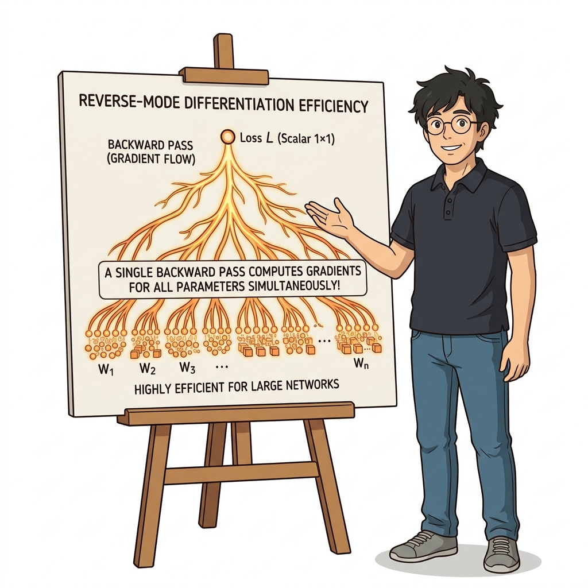
그림 5-13: 하나의 스칼라 손실(Loss)로부터 수천~수억 개의 가중치 기울기를 구하는 딥러닝 환경이처럼 계산이 효율적으로 이뤄지기 때문에 미분을 반대 방향으로 전파하는 방식(역전파)을 이용하는 것입니다.
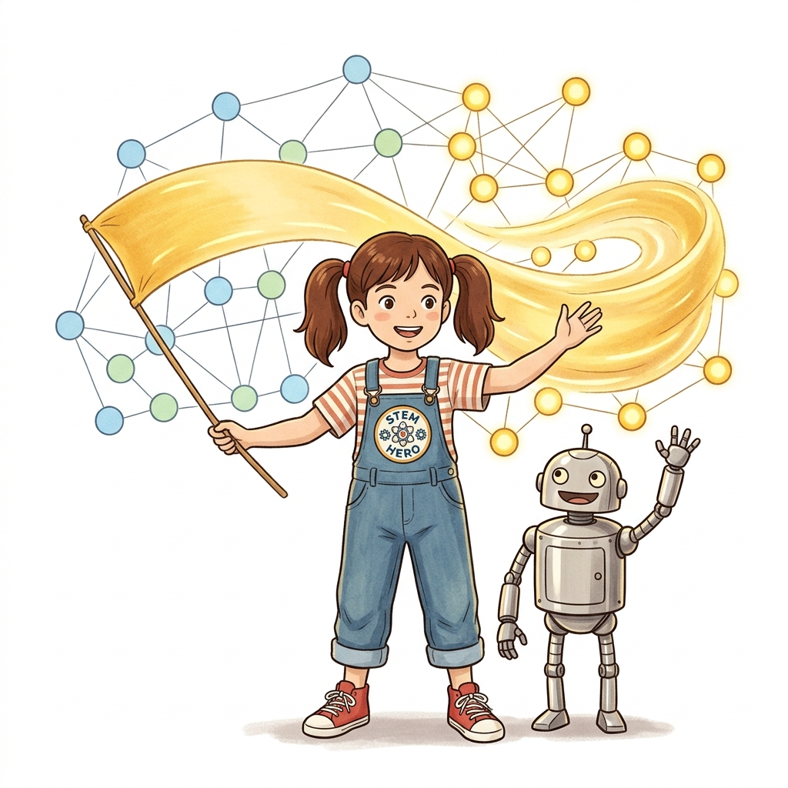
그림 5-14: 단 한 번의 역전파 패스로 모든 매개변수의 기울기를 동시 산출하는 혁신적 효율성5.3 계산 그래프로 살펴보기
다음과 같이 통상적인 계산인 순전파 계산 그래프(그림 5-1)와 미분을 계산하는 역전파 계산 그래프(그림 5-4)를 위아래로 나란히 놓고 살펴봅시다.
그림 5-5 순전파(위)와 역전파(아래)
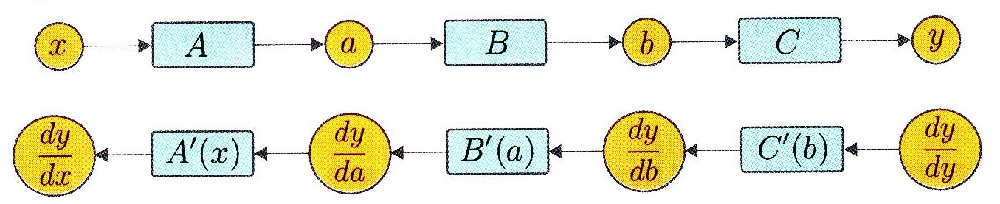
이렇게 비교하니 순전파와 역전파의 관계가 명확히 보입니다.
예를 들어 순전파 시의 변수 $a$ 는 역전파 시의 미분 $\frac{dy}{da}$ 에 대응합니다. 마찬가지로 $b$ 와 $\frac{dy}{db}$ 가 대응하고 $x$ 와 $\frac{dy}{dx}$ 가 대응합니다. 또한 함수에도 대응 관계가 보입니다.
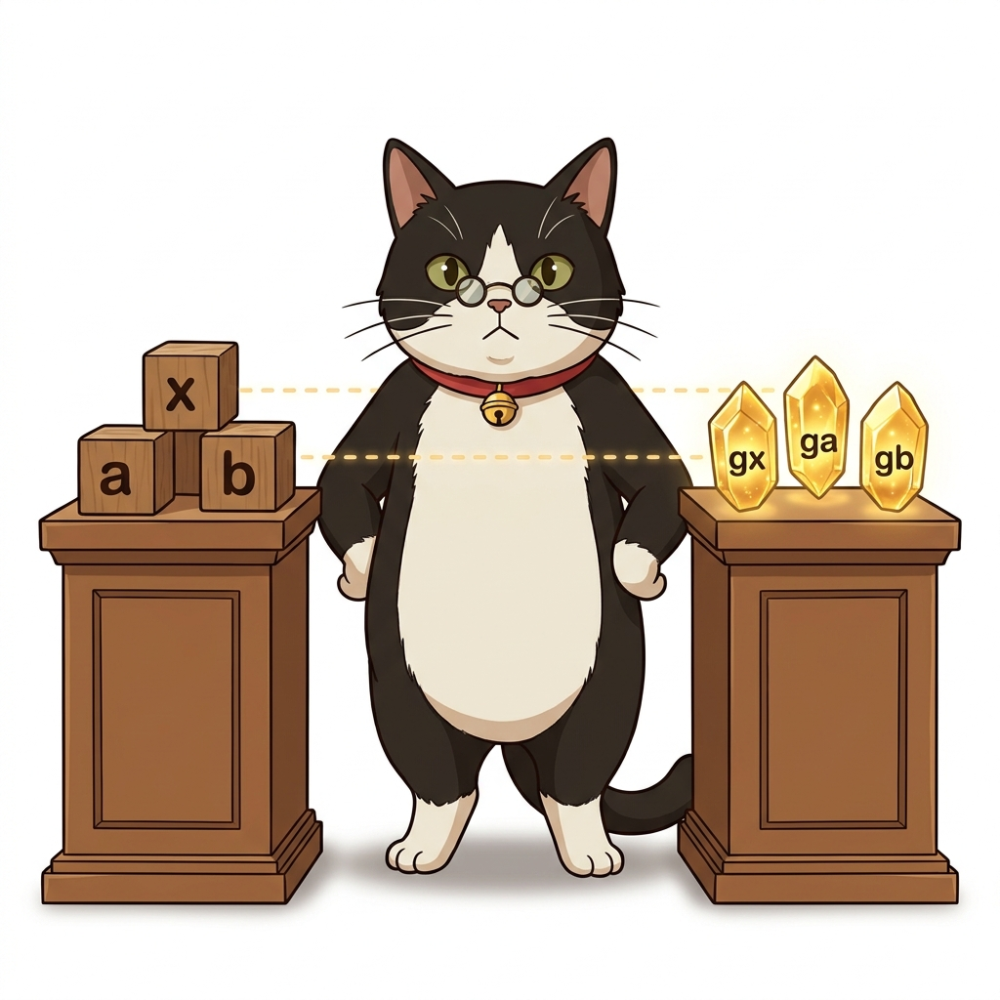
그림 5-15: 순전파의 변수 (x, a, b, y)와 역전파의 기울기 (gx, ga, gb, gy)의 완벽한 1:1 대칭 대응함수 $B$ 는 역전파의 $B’(a)$ 에 대응하고 $A$ 는 $A’(x)$ 에 대응하는 식입니다. 이렇게 변수는 ‘통상값’과 ‘미분값’이 존재하고, 함수는 ‘통상 계산(순전파)’과 ‘미분값을 구하기 위한 계산(역전파)’이 존재하는 것으로 생각할 수 있습니다. 이를 통해 역전파를 어떻게 구현할지 짐작해볼 수 있을 것입니다.
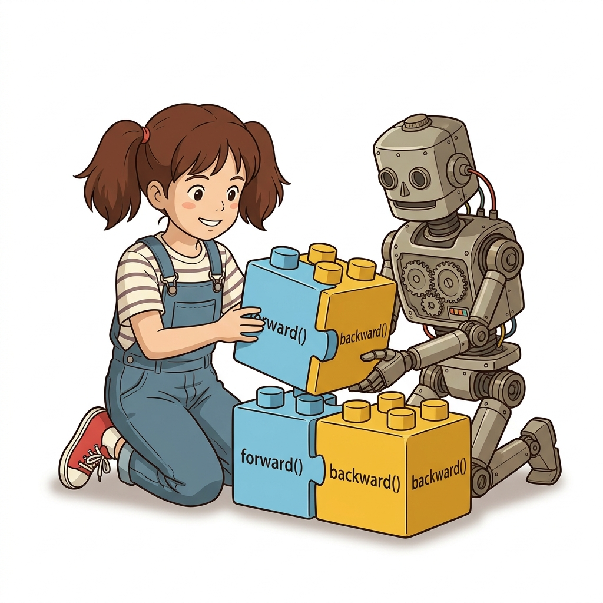
그림 5-16: forward 계산의 짝꿍으로 설계되는 각 함수의 backward 역전파 메서드마지막으로 [그림 5-5]의 함수 노드 $C’(b)$ 에 주목해보죠. $y = C(b)$ 라는 계산의 미분입니다만, 여기서 주의할 점은 $C’(b)$ 를 계산하려면 $b$ 값이 필요하다는 사실입니다. 마찬가지로 $B’(a)$ 를 구하려면 입력 $a$ 의 값이 필요합니다. 무슨 말인고 하니, 역전파 시에는 순전파 시 이용한 데이터가 필요하다는 것입니다. 따라서 역전파를 구현하려면 먼저 순전파를 하고, 이때 각 함수가 입력 변수(앞의 예에서는 $x$, $a$, $b$)의 값을 기억해두지 않으면 안 됩니다. 그런 다음에야 각 함수의 역전파를 계산할 수 있습니다.
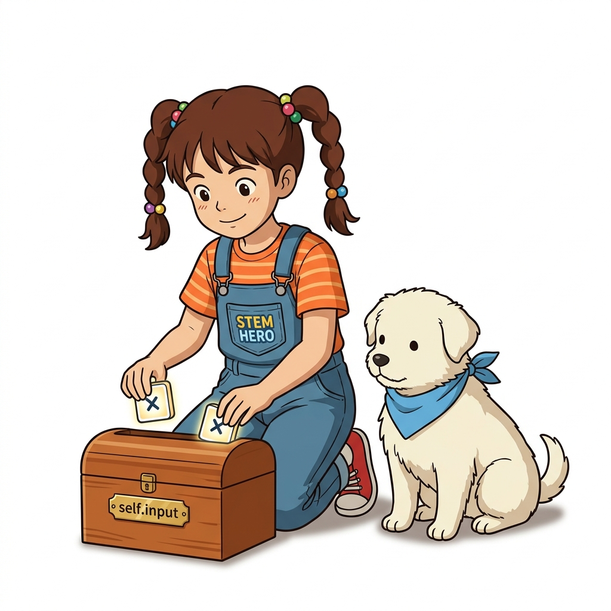
그림 5-17: 도함수 계산(2x)을 위해 순전파 시 입력값(x)을 self.input에 기억해야 하는 필연적 이유이상이 역전파의 이론 설명입니다. 다소 복잡한가요? 좋은 소식을 알려드리겠습니다. 다행히 역전파는 이 책에서 가장 어려운 내용에 속한답니다. 그리고 아직 잘 이해되지 않는 부분도 실제로 코드를 실행해보면 이해될 것입니다. 다음 단계에서는 역전파를 구현하고 실제로 돌려보며 검증하겠습니다.
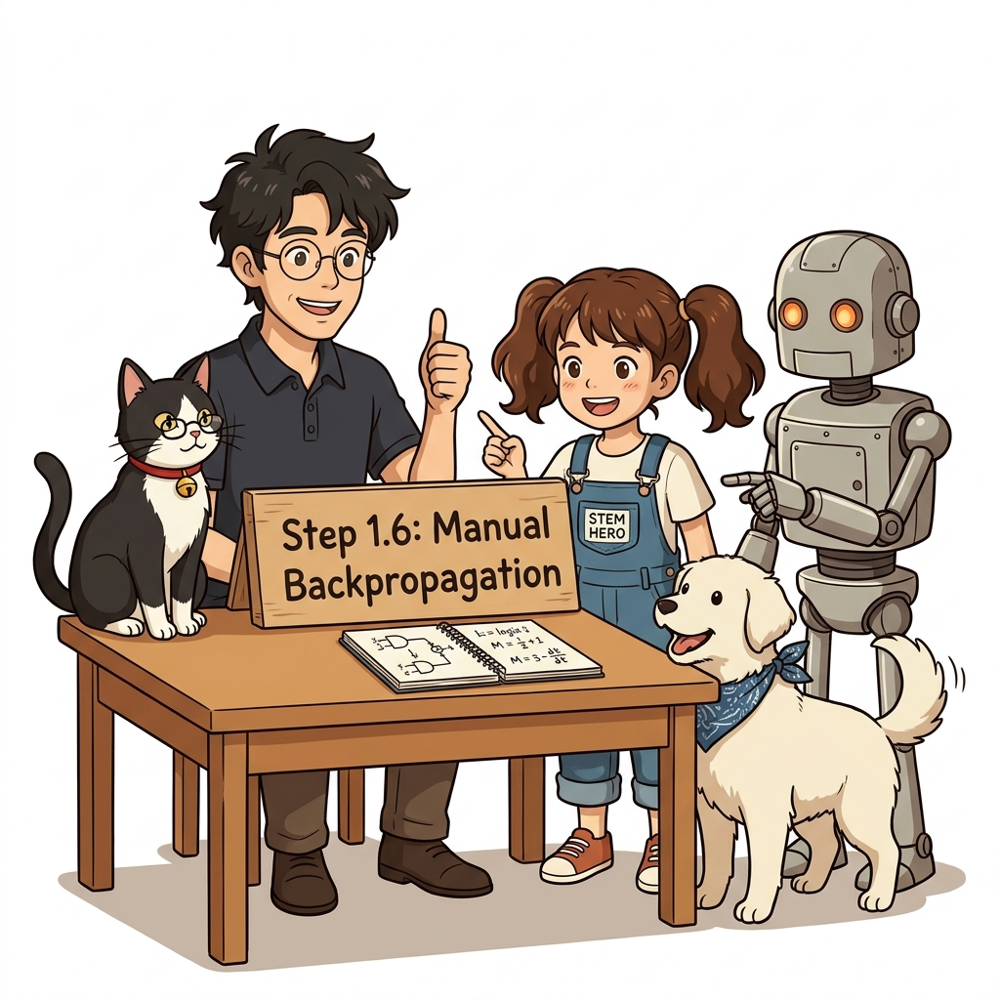
그림 5-18: 이론을 코드로 완성할 다음 단계(1.6 수동 역전파)로의 힘찬 출발